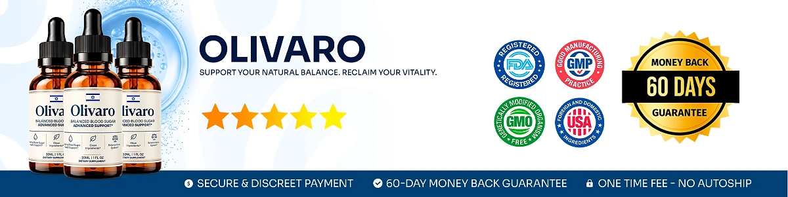

What Is Olivaro And How Does It Work?
Here is the quick answer: Olivaro is an oral liquid supplement, measured with a dropper, whose purpose is to provide nutritional support for healthy glucose levels, metabolism, and daily energy. The bottle carries the phrase "Balanced Blood Sugar Advanced Support", and it is meant for adults looking for a simple routine to care for their glucose health.
The official website describes a formula of plant extracts and minerals working on three fronts. Chromium Picolinate is there for the body's insulin response, African Mango and Gymnema Leaf are there for healthy sugar absorption, and Maca and Panax Ginseng, both adaptogens, are there to help with fatigue and oxidative stress.
Looking at the Supplement Facts panel, chromium sits next to a 200 mg proprietary blend that combines over twenty botanicals and amino acids, such as Eleuthero, Grape Seed, Guarana, Green Tea, Astragalus, and L-Carnitine.
The approach is gradual. Olivaro is offered as daily nutritional support, not a quick fix, and works best alongside healthy meals, regular activity, and good sleep, helping keep glucose levels balanced and energy stable during the day.
According to the official website, the formula also aims to support healthy insulin function, carbohydrate metabolism, and weight management. Results vary from one person to the next.
Each purchase is a 30 ml (1 fl oz) bottle with 30 servings of 1 ml, a liquid that many people find easier than swallowing capsules.
The label states that Olivaro is produced in the USA from globally sourced ingredients in an FDA-registered facility, and the official website displays GMP and non-GMO badges. It is not intended to diagnose, treat, cure, or prevent any disease, and it does not replace any medication a doctor has prescribed.
Olivaro Ingredients
The formula behind Olivaro is listed on the Supplement Facts panel: each 1 ml serving contains chromium (as chromium picolinate), 0.7 mcg, and a 200 mg proprietary blend. Six ingredients get the most attention on the official website:
Chromium Picolinate: An essential mineral that is there to support the body's insulin response.
Gymnema Leaf Extract: A traditional Ayurvedic herb that is there to support healthy sugar absorption and calmer sweet cravings.
African Mango Seed Extract: There to support the metabolism of sugars and fats.
Green Tea Leaf Extract: Naturally rich in catechins, there to support insulin sensitivity.
Maca Root Extract: An adaptogen that is there to support steady daily energy.
Panax Ginseng Aerial Extract: There to support glucose uptake and vitality.
The blend is completed by Astragalus, Grape Seed, Eleuthero, Guarana, Grapefruit, Capsicum, Coleus Forskohlii, Raspberry Ketones, L-Tyrosine, L-Arginine, L-Glutamine, GABA, Beta-Alanine, Monoammonium Glycyrrhizinate, L-Tryptophan, L-Ornithine, and L-Carnitine. The label does not break down how much of each is used.
The other ingredients are water, glycerin, xylitol, stevia extract, organic lemon extract, citric acid, sodium benzoate, potassium sorbate, and natural flavors.
Olivaro Side Effects
For most healthy adults, Olivaro is presented as a gentle daily option made with naturally derived ingredients, according to the official website, to support steady energy and healthy blood sugar levels. It is still not for everyone, and the manufacturer publishes cautions that every buyer should know about.
The official FAQ calls Olivaro an active, stimulating supplement. The blend contains green tea and guarana, which naturally provides caffeine, so anyone sensitive to stimulants should keep this in mind. The official website recommends that people under 18, or with pre-existing health conditions, particularly heart problems or high blood pressure, check with a healthcare professional before use.
The label also asks pregnant or nursing mothers, children under 18, and individuals with a known medical condition to consult a physician. Anyone taking prescription medication, including medication for blood sugar, should talk to a doctor first, because the formula is designed to support glucose metabolism. Do not exceed the recommended dose, and never use a bottle whose safety seal is damaged or missing.
According to the label, Olivaro is manufactured in the USA in an FDA-registered facility. It is not intended to diagnose, treat, cure, or prevent any disease and does not replace medical care. Stop using it and contact a healthcare professional if anything feels wrong. Results differ from person to person.
Olivaro Dosage
The label keeps it simple: shake well before each use, then take 1 or 2 droppers full daily, placing the liquid in the mouth and swallowing. Because Olivaro is a liquid, there are no capsules and nothing to prepare.
The official website points to the morning, preferably before a meal, as the best moment. Keeping a regular time each day helps you remember and gives the minerals and botanicals a steady place in your routine.
The Supplement Facts panel shows 30 ml (1 fl oz) in each bottle, a 1 ml serving size, and 30 servings per container. Since the official website explains that the ingredients are meant to work consistently over time, many buyers choose a longer supply.
There are no timers or multiple doses to remember. One daily serving, combined with balanced nutrition, physical activity, and good sleep, is the routine the manufacturer proposes.
Like any supplement, Olivaro should never be taken above the recommended dose. The label advises keeping it in a cool, dry place, away from heat, light, and humidity, and out of reach of children. It gives its best results with regular daily use and healthy habits.
Olivaro – Refund Policy
Every order of Olivaro is covered by a 60-day Results or Refund Guarantee from the purchase date, according to the official website. If you have used it for at least 30 days and you are not completely satisfied with your results, the product, or the experience, the support team is available to help.
The details on the official returns page say that a refund can be requested within 60 days of the original purchase date. The page suggests checking the delivery date on the carrier's tracking website to confirm you are still within the 60 days.
The process step by step: email customer support and write "Refund Request" in the subject line, explaining that you are not fully convinced by the product. Follow the instructions the team sends to complete any remaining steps of the return.
Customer support contact: contact@customercs.com, the email on the label, which also lists +1 (507) 448-8190. The official order page shows +1 (855) 889-3137.
Refund timing: once all requirements are met and the request is approved, the refund is processed. It may take several business days to show on the original payment method, depending on the bank or payment provider.
The full refund policy is available on the official website, so it is worth reading before placing an order for Olivaro.
Olivaro Customer Reviews
-
 Michael Thompson — Houston, TexasVerified Purchase – 6 Bottles
Michael Thompson — Houston, TexasVerified Purchase – 6 Bottles
“If it wasn't for Olivaro, I'd still be struggling with my blood sugar levels… But thank goodness I didn't have to do any of that, because just two weeks into taking Olivaro, I began to see my glucose readings stabilize and my energy levels soar.”
-
 Sarah Rodriguez — Chicago, IllinoisVerified Purchase – 6 Bottles
Sarah Rodriguez — Chicago, IllinoisVerified Purchase – 6 Bottles
“I was totally discouraged… dealing with constant blood sugar spikes and feeling tired all the time. It got to the point where I was afraid to enjoy a meal. But then I started on Olivaro, and day by day, my glucose levels became more balanced... I even noticed my cravings diminishing, without those sudden urges for sweets… And I swear, it felt like I regained control of my health in just 3 weeks!”
-
 Lauren Rio — Seattle, WashingtonVerified Purchase – 6 Bottles
Lauren Rio — Seattle, WashingtonVerified Purchase – 6 Bottles
“I was about to give up on finding something that actually worked… and then Olivaro showed up... Oh, what a relief!!! My blood sugar readings are now consistently in the healthy range, and I feel so much more energetic. I can hardly believe it, it's truly life-changing.”
Olivaro – Where To Buy
The safest place to buy Olivaro is its official website, theolivaro.com. Orders are placed on the official order page, and the official website does not send customers to eBay, Amazon, Walmart, or other marketplaces, so listings there should be treated with caution.
Copies sold by third parties can look nearly identical, yet their origin and storage cannot be confirmed, which raises real questions about freshness, quality, and safety in a liquid formula. Purchases made outside the official source may not be covered by the 60-day guarantee.
That is why most buyers prefer to order Olivaro directly from the official website. Going straight to the source means receiving the authentic original product, made in the USA, along with customer support and the complete guarantee. The official FAQ adds that every order is a one-time payment, with no auto-ship or hidden fees.
Before you pay, take a moment to confirm that you are on the official Olivaro website, so you avoid counterfeit batches.
To ensure you’re getting the authentic product, most users choose to visit the official website.
Is Olivaro A Scam?
From everything the official website and the label show, Olivaro does not appear to be a scam. It is a genuine liquid supplement, sold through an established retailer and built to provide nutritional support for glucose metabolism and healthy blood sugar levels with regular use.
The label includes a Supplement Facts panel with chromium and a 200 mg blend featuring Green Tea, Panax Ginseng, Gymnema, Maca, and African Mango. These are well known in natural wellness, and each one is named, even though the amounts inside the blend are not disclosed.
The label also lists the distributor, Instituto Experience in Lakeland, Florida, with a support email and phone number, and confirms production in the USA in an FDA-registered facility.
There are points to keep in mind. The formula contains guarana and is described as stimulating on the official website, and the order page uses a countdown timer and limited-stock messages. Results will not be the same for everyone, and no supplement can promise a specific outcome or stand in for medical care.
The product comes with a 60-day Results or Refund Guarantee, and purchases are one-time, with no auto-ship or hidden fees, according to the official website.
For adults who want an easy daily liquid to support healthy blood sugar levels and steady energy, Olivaro is a reasonable option to consider, especially when ordered from the official website and discussed with a doctor if you take medication.
For those who want to verify product details or check current availability, the official Olivaro website remains the safest option.

Check Availability On Official Website
